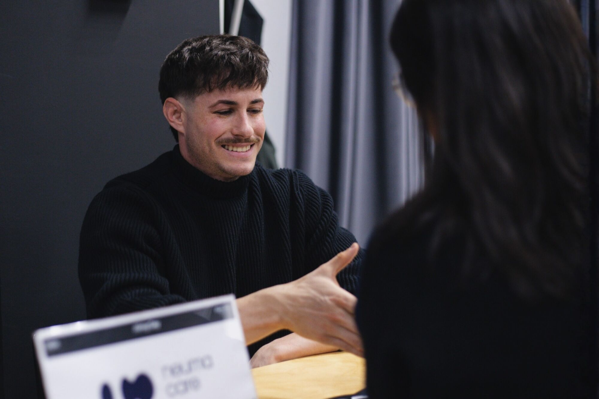
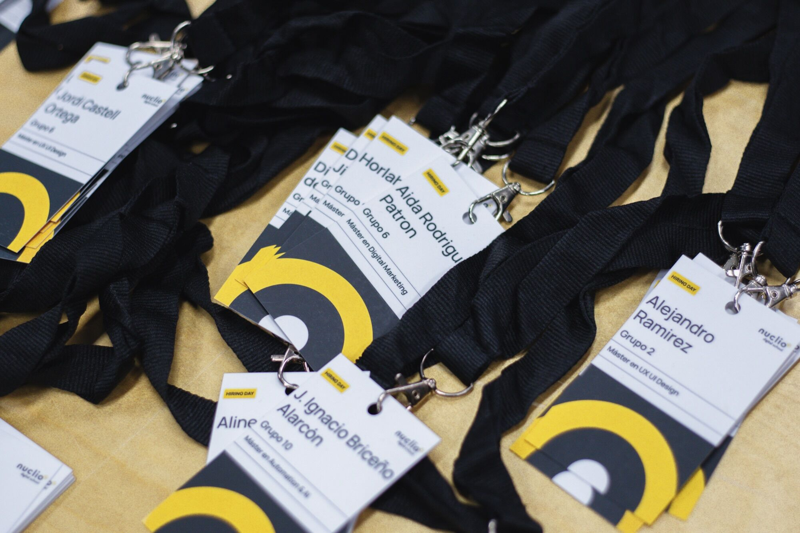

At NeumaCare, we believe that building transformative technology starts with building the right team. As we enter our next phase of growth, we are actively expanding and seeking young, motivated talent eager to make an impact in the health tech space.
We recently participated in the Hiring Day at Nuclio Digital School — a dynamic event bringing together profiles aligned with the startup ecosystem. The level of talent, motivation, and adaptability we encountered was remarkable.

A Critical Moment For The Team
For NeumaCare, participating in this event comes at a critical moment. As we advance in our development roadmap, strengthening the team becomes essential to successfully navigate the challenges of scaling technology and operations.
Nuclio Digital School profiles are uniquely suited to the startup environment — they understand agility, ownership, and the importance of execution in early-stage ventures. These are exactly the qualities that resonate with how we work at NeumaCare.

What We Are Looking For
Over the coming months, we will be opening new opportunities for individuals who want to be part of a project at the intersection of healthcare, technology, and human-centred design.
We are not just looking for skills — we are looking for mindset. People who are curious, proactive, and eager to contribute to something meaningful. People who thrive in environments where their work has direct, real-world impact.
An Open Invitation
If what we are building at NeumaCare resonates with you, we would be glad to connect. Whether through upcoming job openings or direct outreach, we are always open to meeting individuals who believe they can add value to the project.
"At NeumaCare, we continue growing with a clear vision: building not only technology, but also the team that will make it possible."
— NeumaCare Team
We would like to thank the team at Nuclio Digital School for organising such a dynamic and well-structured event, and for bringing together the kind of talent that drives innovation forward.